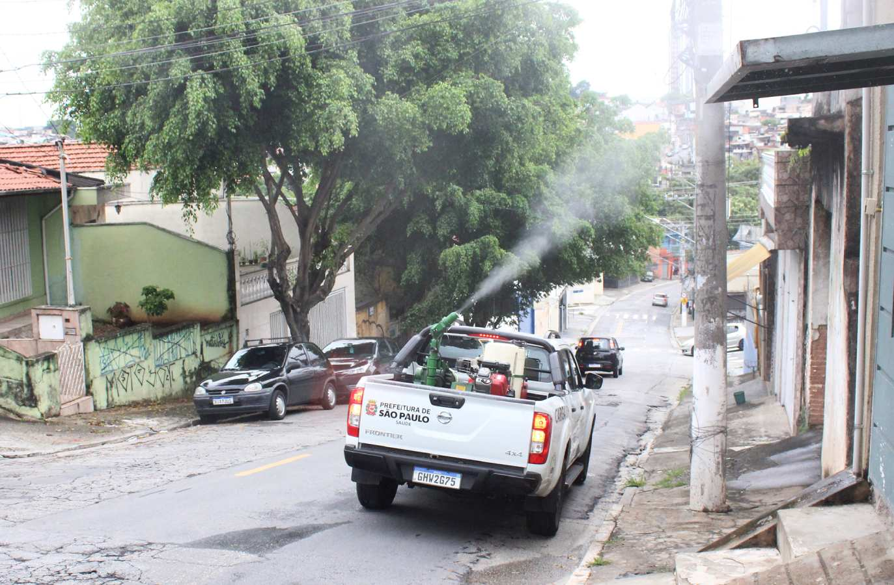
Em suma, o combate à dengue depende essencialmente da eliminação da água parada. Embora as ações da Prefeitura, como o carro do fumacê (nebulização), ajudem a matar o mosquito Aedes aegypti adulto em circulação, essa é apenas uma medida paliativa. A prevenção real e duradoura é feita por cada cidadão, que deve vistoriar sua casa semanalmente, tampar reservatórios e remover todos os focos onde a larva possa se desenvolver. A união de esforços entre a população e o poder público é a única forma de interromper o ciclo de transmissão da doença.
Vistoria Semanal e Eliminação de Focos

Verifique e tampe bem caixas d'água, tonéis e todos os reservatórios de água.
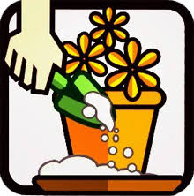
Coloque areia até a borda nos pratos de vasos de plantas ou elimine os pratinhos.
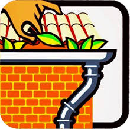
Limpe as calhas e lajes, retirando folhas e sujeira que possam reter água.
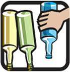
Guarde garrafas (plásticas e de vidro) sempre de cabeça para baixo.
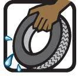
Guarde pneus em locais cobertos ou entregue-os ao serviço de limpeza urbana.
Mantenha lixeiras bem tampadas e não jogue lixo em terrenos baldios.
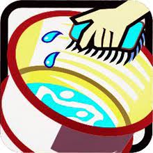
Limpe e troque a água dos bebedouros de animais de estimação diariamente ou, no máximo, a cada cinco dias, lavando as bordas.
Cuidados com Objetos e Equipamentos
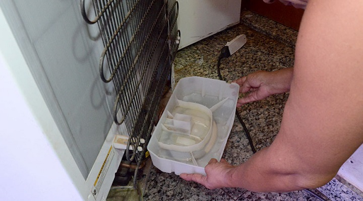
Retire a água acumulada em bandejas externas de geladeiras e ar-condicionado e lave-as periodicamente.
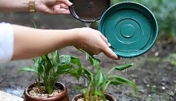
Lave com água e sabão as bordas dos recipientes que acumulam água (como baldes e vasos) para eliminar possíveis ovos do mosquito.
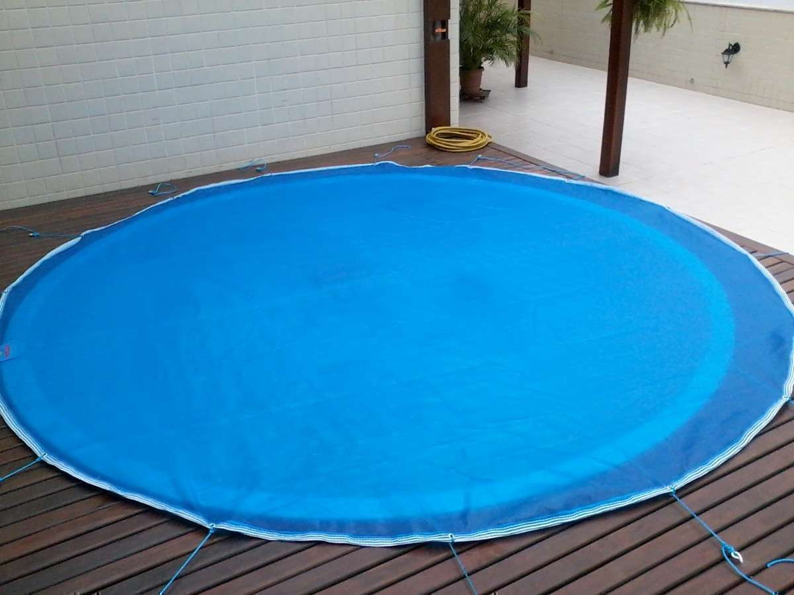
Estique lonas usadas para cobrir objetos (como entulhos ou piscinas) para evitar a formação de poças.
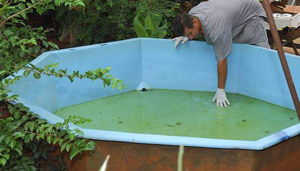
Mantenha piscinas limpas e tratadas com cloro.
Outras Medidas Importantes

Permita o acesso dos agentes de saúde/endemias à sua casa ou estabelecimento para que realizem a vistoria e, se necessário, apliquem larvicidas.
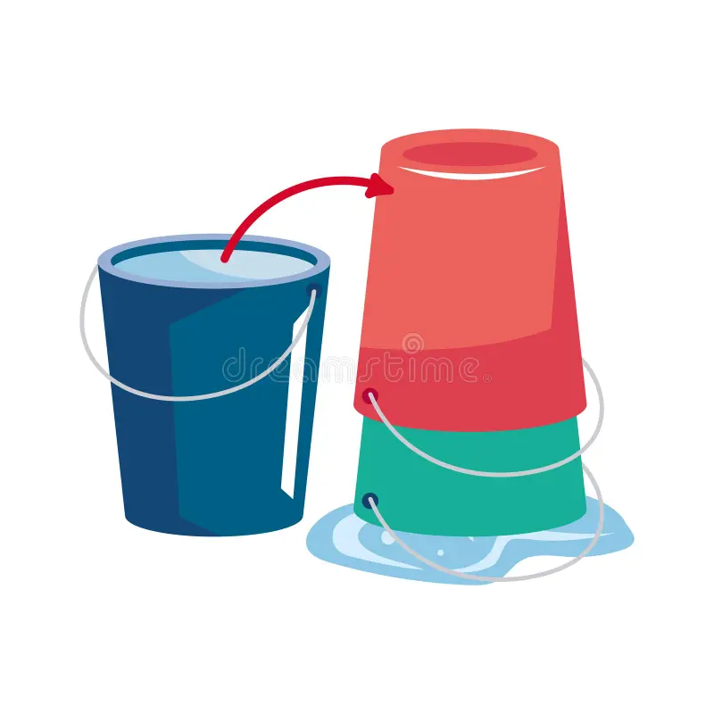
Se for viajar ou deixar o imóvel fechado, remova ou cubra bem todos os recipientes que possam acumular água.
A luta contra a dengue é uma responsabilidade de todos! Ao realizar essas ações regularmente, você protege a si mesmo, sua família e toda a comunidade.